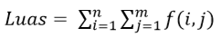

Pengolahan Citra Digital Untuk Menghitung Luas Daerah Bekas Penambangan Timah
Penulis:
Rika Favoria Gusa, S.T, M.T.
Oleh:
-
Calvin
1021711017
-
Dede Naruari
1021711022
1. Latar Belakang
Luas daerah bekas penambangan timah yang banyak terdapat di wilayah Provinsi Kepulauan Bangka Belitung dapat diidentifikasi dan dianalisis melalui pengolahan citra satelit. Banyak di antara daerah bekas penambangan timah tersebut ditinggalkan begitu saja paska penambangan tanpa ada usaha reklamasi ataupun pemanfaatan kembali. Oleh karena itu, dalam penelitian ini akan dilakukan pengolahan citra digital berupa citra satelit dari suatu wilayah tertentu di pulau Bangka yang memiliki daerah bekas penambangan timah agar dapat dihitung luasannya. Hal ini perlu dilakukan untuk mengetahui berapa luas daerah bekas penambangan timah yang harus diolah kembali ataupun direklamasi sehingga kerusakan lingkungan akibat penelantaran bekas penambangan timah dapat dikurangi.
2. Dasar Teori
Citra Digital
Secara umum, pengolahan citra digital menunjuk pada pemrosesan gambar 2 dimensi dengan menggunakan komputer. Dengan pengolahan citra, sebuah citra ditransformasi menjadi citra lain. Berdasarkan nilai pikselnya, citra digital dapat dikelompokkan ke dalam tiga jenis citra, yaitu:
-
Citra Warna/RGB
(klik disini) -
Citra Grayscale
(klik disini) -
Citra Biner
(klik disini)
Perbaikan Citra
Perbaikan citra bertujuan meningkatkan kualitas tampilan citra untuk pandangan manusia atau untuk mengkonversi suatu citra agar memiliki format yang lebih baik sehingga citra tersebut lebih mudah diolah dengan komputer. Perbaikan terhadap suatu citra dapat dilakukan antara lain dengan metode perenggangan kontras (contrast stretching). Perenggangan kontras adalah teknik yang sangat berguna untuk memperbaiki kontras citra terutama citra yang memiliki kontras rendah.
Operasi Morfologi
Kata morfologi secara sederhana dapat diartikan sebagai bentuk dan struktur suatu objek. Operasi morfologi menggunakan dua input himpunan yaitu suatu citra (pada umumnya citra biner) dan suatu kernel. Ada dua operasi dasar morfologi yaitu:
-
Dilasi
(klik disini) -
Erosi
(klik disini)
Analisis Objek
Analisis objek didasarkan pada ciri khas (feature) geometri pada objek tersebut. Luas atau ukuran merupakan salah satu fitur dari objek di dalam citra dan dapat dihitung menggunakan persamaan:

Dengan
m : jumlah baris piksel citra
n : jumlah kolom piksel citra
(i,j) : koordinat spasial piksel
f(i,j) = 1 jika (i,j) adalah piksel objek dalam citra biner
3. Metode Penelitian